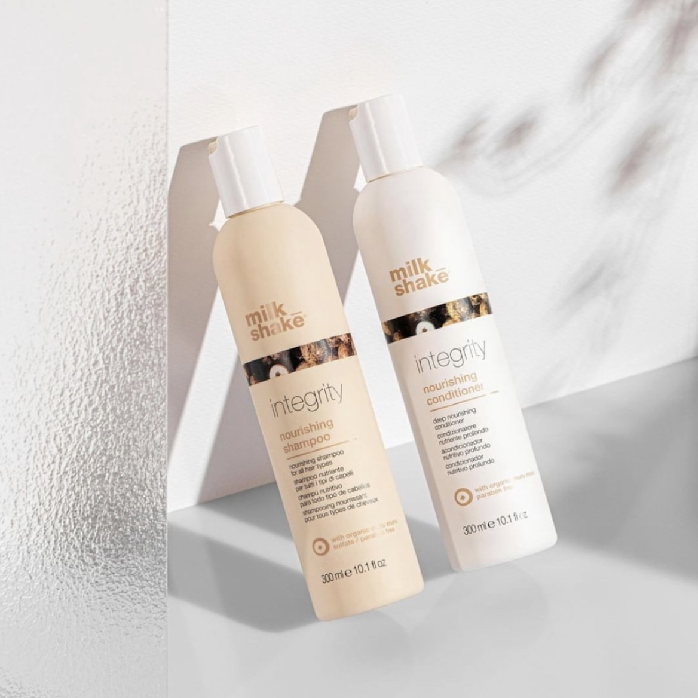

plus- en minpunten
✓ het is uitwasbaar
✗ het werkt alleen op blond haar
omschrijving
de perfecte manier om je haar een mooie roze kleur te geven zonder je natuurlijke haarkleur te beinvloeden. De pink lemonade shampoo is makkelijk en snel aan te brengen. De roze gloed zal naar een aantal wasbeurten vervagen en teruggaan naar je eigen haarkleur.
gerelateerde producten

pink lemonade
een bijpassende conditioner om je haar nog langer roze te laten houden en je haar verzacht.

moisture plus
een hydraterende shampoo voor droog haar. het bevat papaya-extract en hyaluromzuur. Vrij van parabenen

integrity series
de integrity shampoo met de formule muru muru boter reinigd zacht, voedt en verwijderd pluis haar. sulfaat en parabeen vrij.